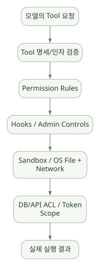

확장과 운영 / 단원 06
실제 자원 접근과 외부 전송의 경계
Permission·Hooks·Sandbox·ACL과 인증·Gateway
먼저 연결해 보기
도구 승인 규칙, 실행 전 검사, OS 격리와 DB 권한은 서로 다른 통제 계층입니다. 읽기 전용 도구라도 데이터가 외부 모델로 전달되거나 대규모 조회가 자원을 소모할 수 있으므로 조회·송신·응답 제한을 함께 봐야 합니다.
모델이나 Gateway를 바꿀 수 있다는 기능과 모든 도구·스트리밍·메시지 규약이 같은 수준으로 작동한다는 주장은 다릅니다. 원문의 계정·플랫폼·버전 조건과 호환성 확인 항목을 실제 환경에서 대조하세요.
읽는 관점도구 선택 설정과 실제 OS·서비스 권한을 구분하고, 어떤 데이터가 어디로 이동하는지 확인하세요.
14. Permission·Guardrails·Sandbox·보안#
14.1 핵심 구분#
- Permission rule: Agent의 특정 도구 사용을 허용·질문·거절하는 정책.
- Hook: 정해진 이벤트에 추가 검사를 실행하도록 구성.
- Sandbox: OS 수준 파일/네트워크 등 실행 자원을 격리하는 메커니즘.
- DB/API ACL: 최종 데이터·서비스에서 허용되는 실제 작업 범위.
- Prompt instruction: 안전한 행동을 요청하는 모델 입력. 강제 수단 아님.
레이어가 서로 보완하지만 하나만으로 전체 공격면을 통제한다고 가정하면 안 된다. [R10][R13][R22]
14.2 일반 권한 모드와 주의점#
공식 문서에는 Manual, Auto 등 다양한 Permission Mode가 있으며 실행 환경과 설정에 따라 승인 동작이 달라진다. 일반적으로 읽기 전용 작업과 파일 수정·Bash 실행·웹 접근의 승인 정책이 구별된다. bypassPermissions 같은 강한 권한 완화 옵션을 기본 학습/업무 설정으로 권장하지 않는다. [R10]
중요: --allowedTools 등에서 Tool을 나열했다고 해서 모든 데이터와 파일에 대한 접근이 완전히 제한되는 것도, 반대로 자동 허용되는 것도 아니다. 실제 Tool 이름, 조직의 관리 정책, Sandbox 범위, 개별 권한 판단을 함께 검증해야 한다.
14.3 파일·명령·네트워크 보호의 층위#
넓은 도식은 가로로 이동하며 읽을 수 있습니다. 도식 크게 보기 ↗

원문에 수록된 학습용 도식입니다. 노드·화살표·분기 라벨을 보존해 다시 배치했습니다. 세부 조건과 예시·구현의 구분은 앞뒤 본문을 함께 읽으세요.
도식 원문 보기 (Mermaid)
flowchart TB
IN[모델의 Tool 요청] --> I[Tool 명세/인자 검증]
I --> P[Permission Rules]
P --> H[Hooks / Admin Controls]
H --> S[Sandbox / OS File + Network]
S --> A[DB/API ACL / Token Scope]
A --> OUT[실제 실행 결과]순서는 설명을 위한 정책 계층도이며 모든 버전의 실제 검증 호출 순서를 보장하지 않는다. 일부 조직 정책과 Hooks의 우선순위·모드별 영향은 복잡하므로 공식 Permission Reference를 기준으로 정확히 확인한다. [R10]
14.4 Sandbox의 실제 기능과 제약#
공식 Sandboxing 문서는 Shell 명령의 파일 시스템·네트워크 접근을 제한하는 방법, 명령별 격리 및 예외를 설명한다. 다음 요소를 확인해야 한다. [R13]
- 지원 OS 및 Linux/WSL2 설정.
- 읽기·쓰기 허용 경로와 보호 경로.
- 네트워크 허용 도메인/프록시.
- 일부 명령이 Sandbox 바깥에서 실행될 수 있는 경로.
- 사용자의 승인 또는 설정에 의해 격리 수준이 바뀌는 조건.
- 작업 경로·심볼릭 링크·컨테이너 권한과의 상호작용.
특히 중요한 사례: 공식 v2.1.309 릴리스 노트에는 Sandbox와 symlink·Shell 시작 파일·MCP 설정 등 관련 보안 수정이 다수 포함되어 있다. Sandbox가 있다는 사실만으로 무결점 격리를 보장할 수 없고 버전 관리와 실제 정책 테스트가 필요하다. [R03]
14.5 보안 체크리스트: 반도체/기업 환경#
- 데이터 분류: 공개 / 내부 / 영업기밀 / 생산기밀 등 정책에 따라 분리.
- 계정 권한: Agent가 쓰는 서비스 계정은 최소 권한.
- 저장소 접근: 원본 데이터는 읽기 전용, 산출물은 별도 위치.
- 네트워크: 허용된 LLM 공급자/게이트웨이/MCP 서버만 접근.
- 로그: 민감 값 마스킹, 보존 기간, 열람 권한, 감사.
- 프롬프트 인젝션: 파일·검색 결과·툴 출력 내 지시를 실행 규칙으로 승격하지 않음.
- 도구 승인: 데이터 삭제·외부 전송·변경 작업은 기본 차단.
- 공급망: 확장 Plugin·MCP Server 코드 서명/검토.
- 사람 승인: 실제 설비 조치·생산 변경은 Agent 단독 실행 금지.
- 데이터 이전: 외부 API로 텍스트/테이블 일부가 전달되는 경로를 정확히 조사.
14.6 읽기 전용이라면 완전히 안전한가?#
아니다. 읽기 전용 Tool이어도 고객·공정 정보가 모델 Context나 외부 서버로 전송될 수 있고, 방대한 데이터 조회로 시스템 자원에 영향을 줄 수 있다. 따라서 조회 권한 + 송신 통제 + 결과 필터링 + 레이트 리밋을 함께 설계한다.
15. Models·인증·Gateway·기업 환경#
15.1 모델 선택이 Agent 특성을 바꾸는 이유#
Claude Code의 Harness와 도구 구성은 유지하더라도 선택한 모델에 따라 추론·도구 사용 빈도·속도·비용·긴 작업 처리 성능이 달라질 수 있다. 공식 문서는 /model이나 --model 등을 통한 모델 선택을 안내한다. [R01]
# 예시: 실제 지원하는 모델 별칭은 제품·계정·날짜에 따라 다름
claude --model sonnet설계 제안: “복잡한 판단은 고성능 모델, 단순 요약은 비용 효율 모델”이라는 규칙은 검토할 수 있지만, 실제로 어떤 모델이 더 나은지는 도메인 데이터로 평가해야 한다. 모델 가격·등급·컨텍스트 길이를 고정된 사실로 문서에 박아두지 않고 버전·계정 기준으로 확인한다.
15.2 인증 경로#
Claude Code는 사용 환경에 따라 계정 로그인, API 키 기반 인증, 클라우드 공급자 연동 등을 지원한다. 인증 경로를 바꿔도 Agent의 사용자 지시·프로젝트 파일이 모델 제공자에게 보내질 수 있는 범위는 별도로 검토해야 한다. [R23][R24]
| 경로 | 도입 고려사항 |
|---|---|
| 개인 개발 환경 | 로그인 방식, 비용 상한, 로컬 파일 권한 |
| 조직 API 사용 | API 키 관리, 청구, 데이터 처리 정책 |
| Amazon Bedrock | 계정·리전·IAM·모델 가용성 |
| Google Vertex 계열 | 프로젝트·리전·권한·서비스 연결 |
| Microsoft Foundry | 인증·리전·관리 정책·모델 지원 |
| 사내 LLM Gateway | 프로토콜 호환성, 인증, 프록시, 요청 본문 정책 |
15.3 사내 LLM Gateway 연계 시 실제 확인할 것#
공식 자료에는 타사 Gateway와 호환성에 관한 문서가 있다. 그 존재가 모든 OpenAI-compatible API 또는 모든 자체 호스팅 모델을 공식적으로 동일하게 지원한다는 뜻은 아니다. Claude Code 기능은 특정 API 필드, 스트리밍, 도구 호출, 메시지 구조, 캐싱, 모델 별칭에 의존할 수 있다. [R26]
확인 체크리스트
- Gateway가 Claude Code가 기대하는 요청/응답 형식을 정확히 처리하는가?
- Tool calling을 구조화된 형태로 주고받는가?
- 스트리밍·중단·재시도·긴 출력 제약을 처리하는가?
- 모델별 지원 기능이 다를 때 올바르게 에러·폴백을 수행하는가?
- 시스템 프롬프트·도구 설명·로그가 Gateway에서 어떻게 보존되는가?
- 인증 토큰·키가 사용자 PC와 서버에서 어떻게 관리되는가?
- 외부 API 전송 여부, 데이터 저장 및 학습 이용 조건이 무엇인가?
- Gateway/모델 버전 변경 시 동작이 깨질 수 있는가?
공식 v2.1.310 릴리스 노트에는 일부 Gateway 호환 오류에서 특정 베타 값·시스템 메시지를 제거해 재시도하도록 수정한 내용이 있다. 이는 Gateway 호환성을 기능 목록만으로 판단할 수 없음을 보여준다. [R03]
15.4 Open-source 모델을 Claude Code에 바로 연결할 수 있나?#
“모델 서빙 프로세스가 OpenAI API 흉내를 낸다”는 사실만으로 Claude Code에서 모든 Agent 기능이 동작한다고 보장할 수 없다. 실제 검토할 것은 다음이다.
- 지원되는 모델 공급자/게이트웨이 프로토콜.
- Tool call 스키마 및 스트리밍 이벤트 호환성.
- 메시지 순서, Reasoning/Thinking 필드, Context 처리.
- 권한·도구 실행은 모델 자체가 아닌 Harness의 책임이라는 점.
- 벤치마크: 같은 데이터셋에서 Tool 성공률, 오류 복구, 비용, 지연시간.
자체 호스팅 모델 유연성이 핵심 요구라면 OpenAI Agents SDK나 PydanticAI 등과 모델 제공자 교체 난이도를 별도로 비교해야 한다.
15.5 서버 운영과 배포의 현실적인 경계#
Claude Code CLI를 서버에 올려 무인 실행하는 것과, Python SDK를 통해 사용자별 Agent 세션을 서비스하는 것은 서로 다른 개발 과제다.
- CLI 기반: 운영 시작은 간단할 수 있으나 사용자별 세션·동시 실행·승인 UI·감사 등을 직접 설계해야 한다.
- SDK 기반: 애플리케이션 API와 사용자 경험을 만들기 좋지만 인증·실행 컨테이너·수명주기·비용·에러 처리 책임이 늘어난다.
- 기업 환경: 망 분리, 패키지 배포, 데이터 반출, 라이선스·계정 정책을 사전에 확인해야 한다.